一系列简短可刷的视频，将线性代数中的几何直觉动画化；
即使你能跟上视频的速度，你也需要留点时间给自己思考，学习往往发生在此刻；
1. 向量
1.1 含义
线性代数中最基础、最根源的组成部分就是向量；
一般来说，有三种看待向量的观点，看似不同却有所关联；
1.1.1 物理专业视角
向量是空间中的箭头，决定一个向量的是它的长度和它所指的方向；但是只要以上两个特征相同，你可以自由移动一个向量而保持它不变；
二维向量
处在平面中的巷里那个是二维的；
三维向量
而处在我们所生活的空间中的向量是三维的；
1.1.2 计算机专业视角
从计算机专业学生的视角看，向量是有序的数字列表；比如你正在做一些有关房价的分析；而你只关心两个特征： ``房屋面积和价格`。
你可能会用一对数字对每个房屋进行建模；第一个数代表房屋面积，第二个数代表价格；
注意，这里的数字顺序不可颠倒；用行话来讲，你会用二维向量对房屋进行建模；在这里，“向量”只不过是“列表”的一个花哨的说法；之所以这个向量是二维的，是因为这个列表的长度是2；
1.1.3 数学专业视角
另一方面，数学家试图去概括这两种观点，大致地说，向量可以是任何东西。只要保证两个向量相加以及数字与向量相乘是有意义的即可；
向量加法和向量数乘贯穿线性代数始终，二者起着很重要的作用
一种思考“向量”的特定方式
现在关注的是它的几何方面，首先需要考虑一个箭头，考虑这个箭头在某个坐标系中，比如x-y平面。并且箭头起点位于原点；这与物理专业学生的看法略有不同。因为在他们眼中，向量可以在空间中自由落脚；但是在线性代数中，向量经常以原点作为起点；
一旦你理解了“向量是空间中的箭头”这种观点，就来看看“向量是有序的数字列表”这种观点；
在直角坐标系中，一个向量的坐标由一对数构成；（-2，3），这对数指导你如何从原点（向量起点）出发到达它的尖端（向量终点）
第一个数告诉你沿着X轴走多远，正数代表向右移动，负数代表向左移动；
第二个数告诉你沿着Y轴走多远；正数代表向上移动，负数代表向下移动；
为了把向量和点区别开，惯用方法是把这对数竖着写，然后用方括号括起来；每一对数给出唯一一个向量；
1.2 向量的和
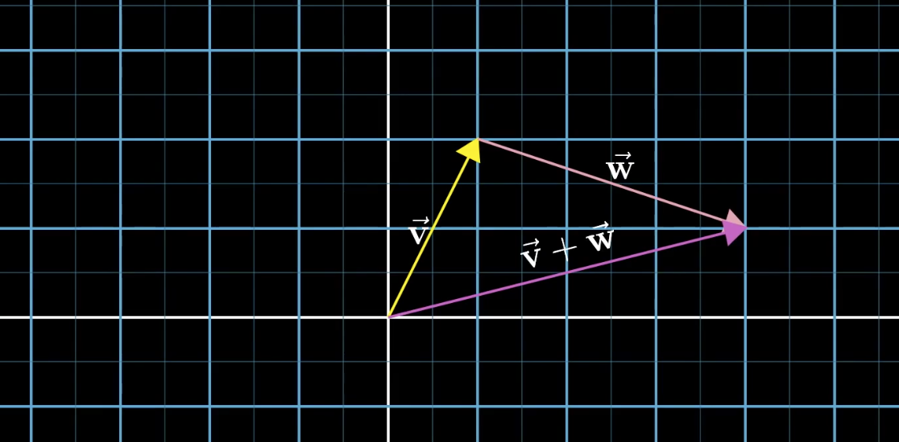
平移第二个向量，使它的起点与第一个向量的终点重合。然后画一个向量，它从第一个向量的起点出发，指向第二个向量的终点；这个向量就是它们的和；
顺便一提，这个向量加法的定义差不多是线性代数中唯一允许向量离开原点的情形；
1.2.1 数学角度看向量加法
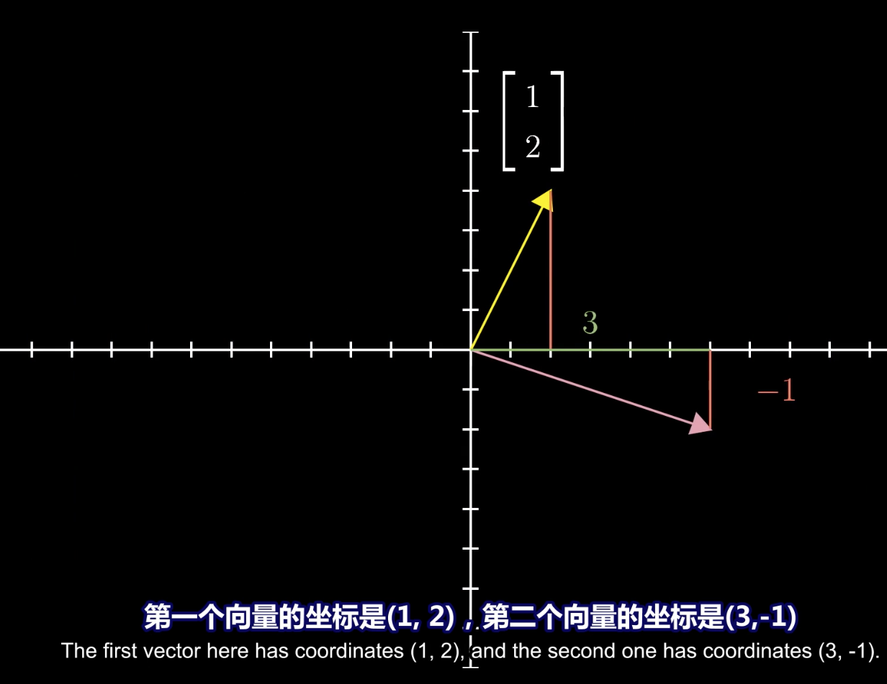
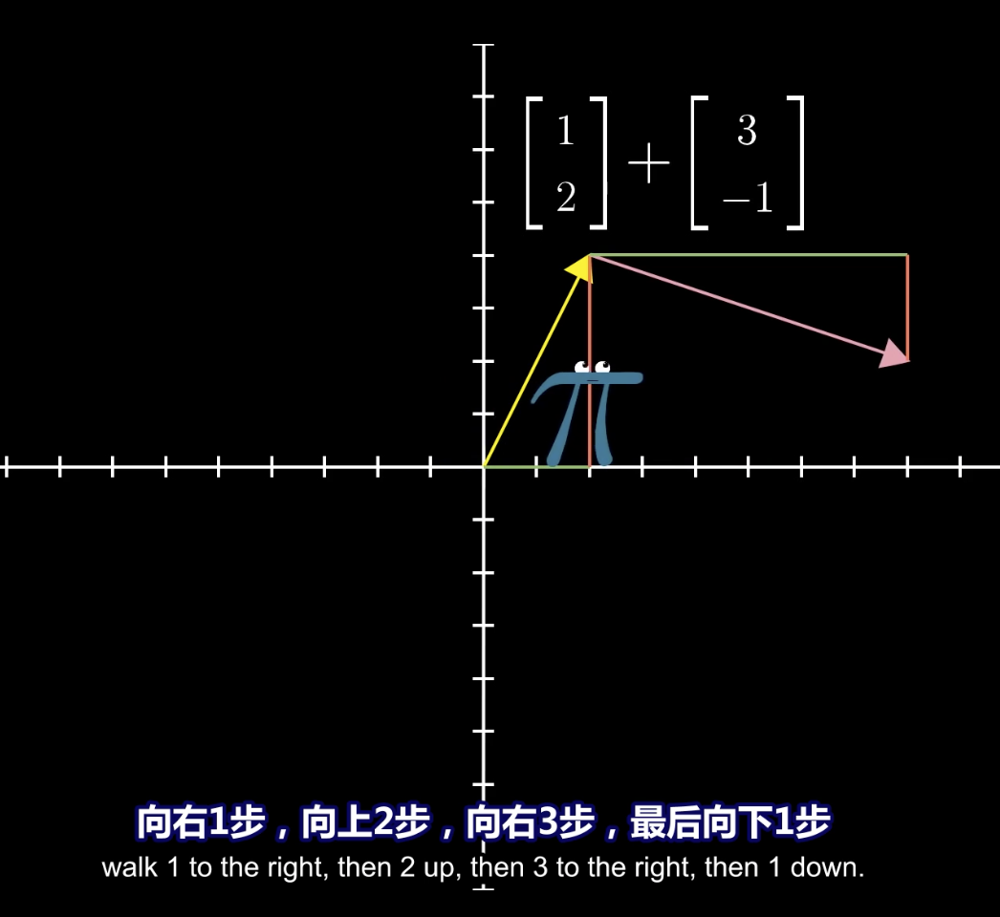
我们重新编排它们的吮吸，使得我们先完成所有水平运送，再完成所有竖直运动；
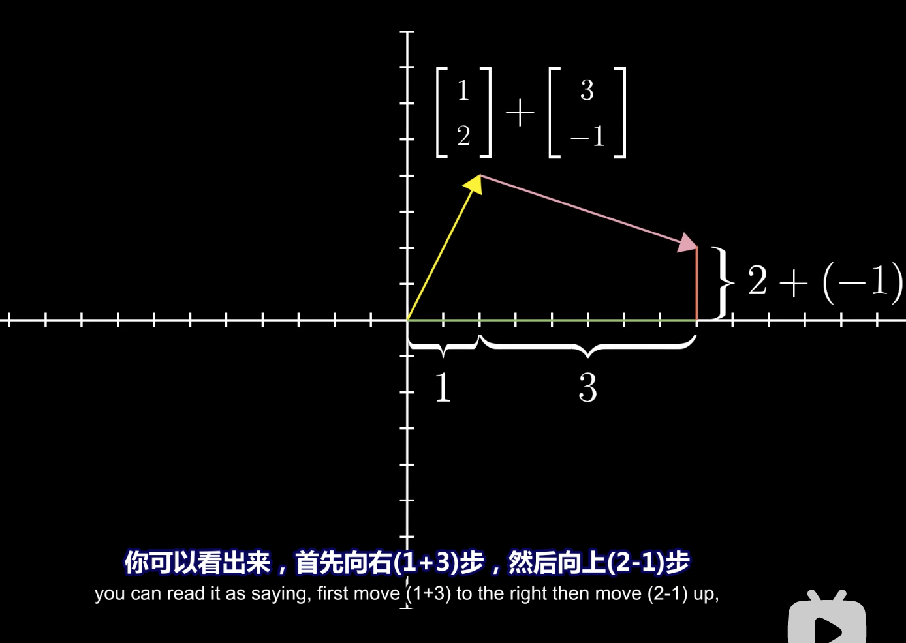
所以新向量的坐标就是 (1+3, 2+(-1)); 即(x1+x2,y1+y2),总体来说，在“向量是有序的数字列表”观点里，向量加法就是把对应项相加；
1.3 向量数乘
另一个向量基础运算就是向量数乘
1.3.1 缩放
比如说你选择数字2，把它与一个给定向量相乘。意味着你把这个向量拉长为原向量的2倍。 如果将向量乘以1/3，就意味着这个向量长度缩短为原来的1/3.如果乘以-1.8，相当于往反方向拉长1.8倍；2,1/3,-1.8,它们用于缩放向量，被称为“标量”实际上自始至终，数字在线性代数中起到的主要作用就是缩放向量；所以，“标量”和“数字”两个词通常在这里可以相互替换；
这种拉伸或压缩，有时又使向量反向的过程被称为“缩放”；
1.3.2 数学角度看向量数乘
从数字的角度来看，将一个向量伸长为原来的2倍；对应于将每一个分量分别乘以2；
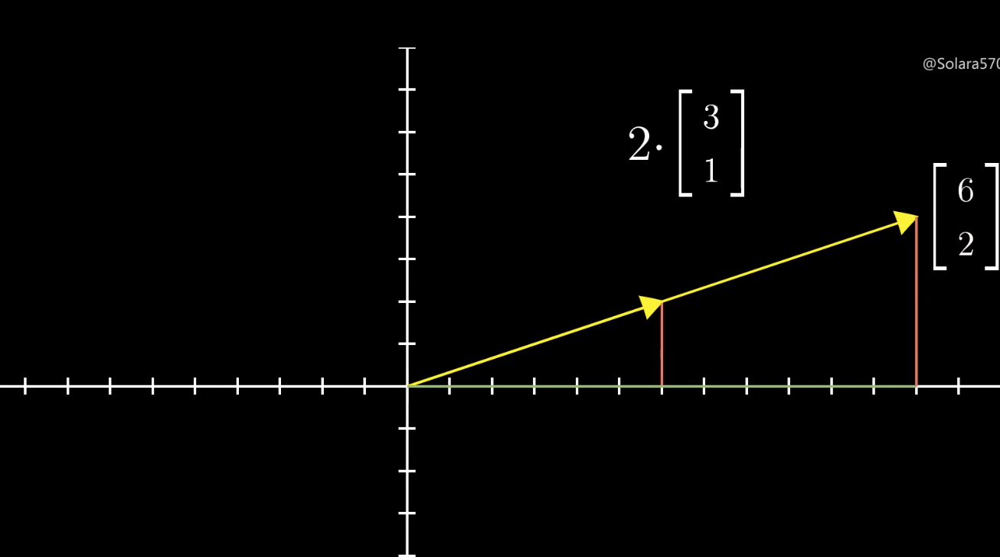
所以将向量看作一个数字列表时，向量与标量相乘就是将向量中的每个分量与标量相乘；
1.4 向量点乘与叉乘
1.5 总结
线性代数围绕两种基本运算： 向量加法与向量乘法“究竟是什么意思了”；
为什么数学家只考虑这两种运算，并且又是如何将它们抽象独立出来，不管你选什么代表向量都与之无关；
实际上无论你怎么看待向量都无所谓，或把向量看作空间中的箭头；或者把向量看作数字列表；这种观点又恰好有漂亮的几何意义与之对应。线性代数的效用很少提现在这些观点的其中一个上，而是更多地体现在它能够在这些观点中相互转化；
线性代数为数据分析提供了一条将大量数据列表概念化、可视化的渠道；它让数据样式变得非常明晰，并让你大致了解特定运算的意义；
另一方面，线性代数给物理学家和计算机图形程序员提供了一种语言；让他们通过计算机能处理数字来描述并操纵空间；
2. 线性组合、张成的空间与基
2.1 基向量
关于向量坐标，还有一种有趣的方式来看待这些坐标，它对线性代数很重要。当你看到一对描述向量的数时，比如（3，-2），可以把它的每个坐标看作一个标量；
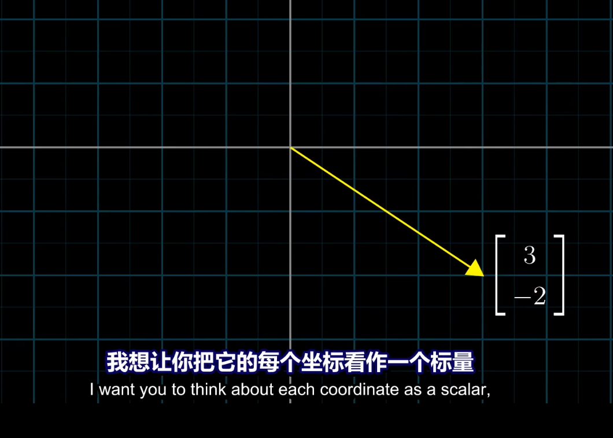
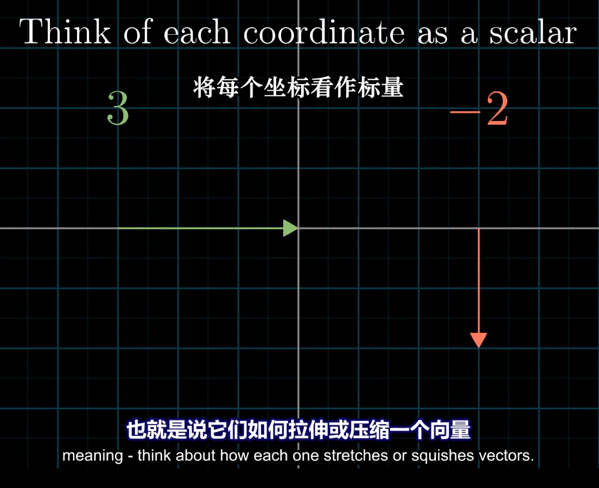
在xy坐标系中，有两个非常特别的向量。一个指向正右方，长度为1，通常被称为i 帽或者x方向的单位向量；另一个指向正上方，长度为1。通常被称为j帽 或者y方向的单位向量；
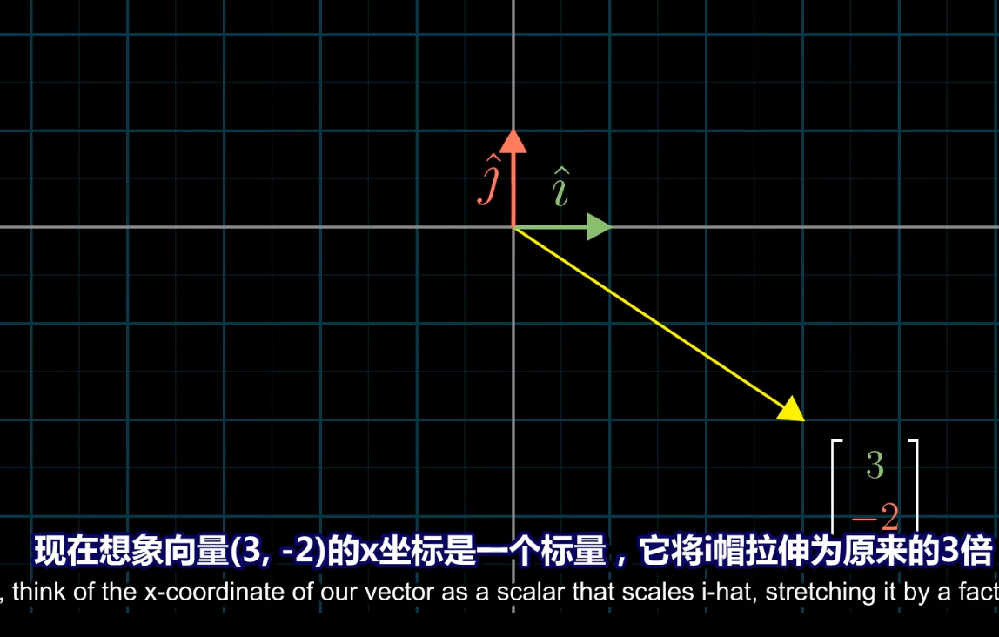
现在想象向量(3,-2)的x坐标是一个标量，它将i帽拉伸为原来的3倍；它将j帽拉伸为原来的2倍；从这个角度去看，这个向量实际上是两个经过缩放的向量的和；
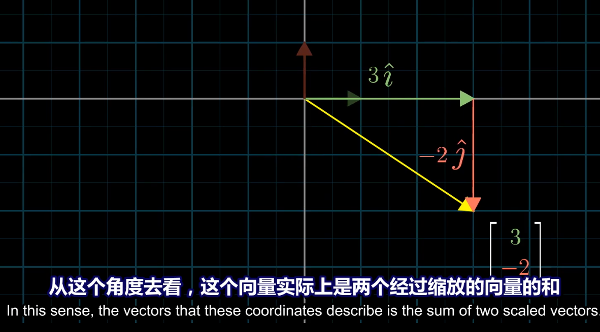
“缩放向量并且相加” 这一概念至关重要，i 与 j 是xy坐标系的“基向量”；它们合起来被称为坐标系的基；
这是在说，当你把坐标看作标量时；基向量实际上就是这些标量缩放的对象；
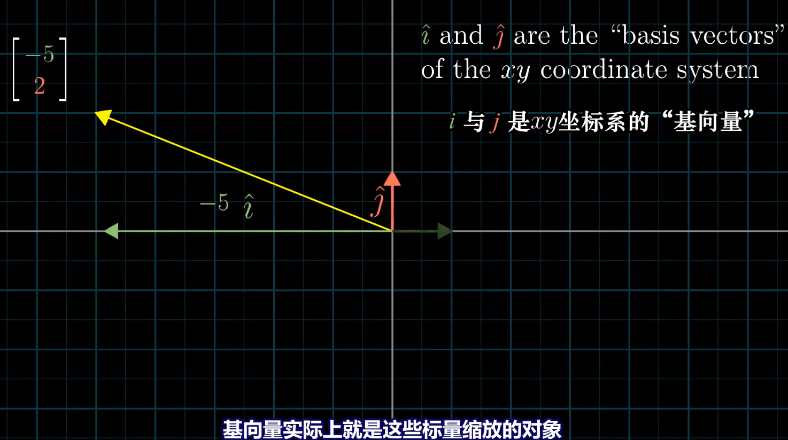
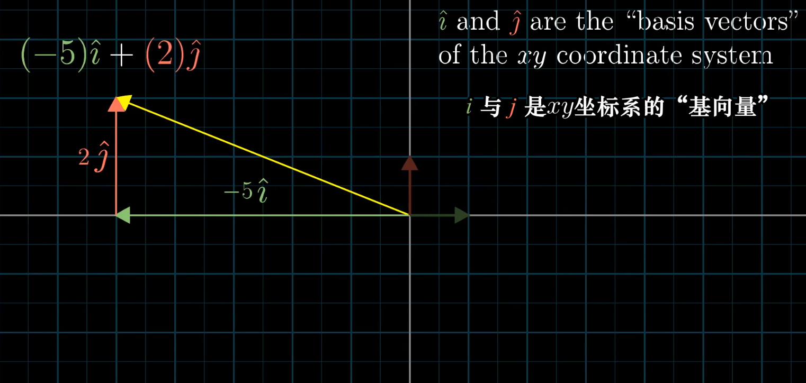
我们根据这两个特殊的基向量构建坐标系时，也浮现了一些有趣而微妙的问题，如果我们选择不同的基向量会怎么样？我们完全可以选择不同的基向量，获得一个合理的新坐标系；
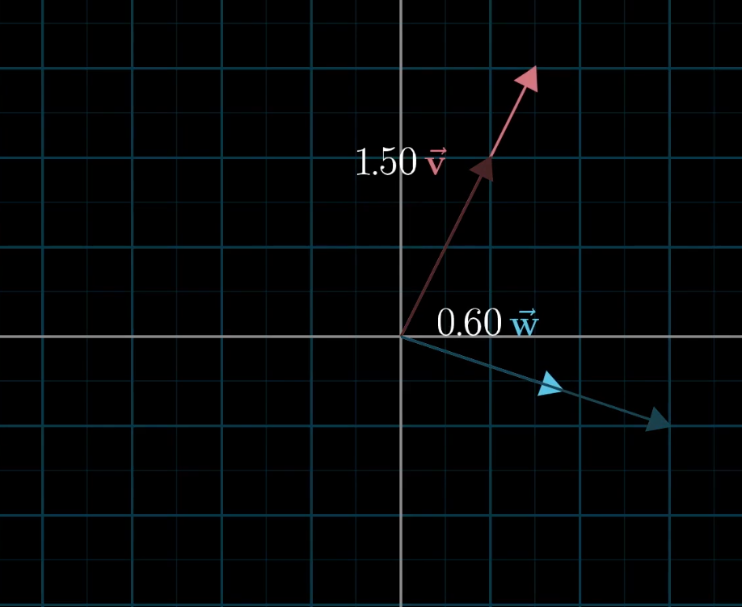
比如说，随便选一个指向右上方的向量（红色），再随便选一个指向右下方的向量（蓝色）。想象一下，通过选择两个标量，分别用于缩放二者的其中一个；然后把它们相加，你能得到不同的结果；
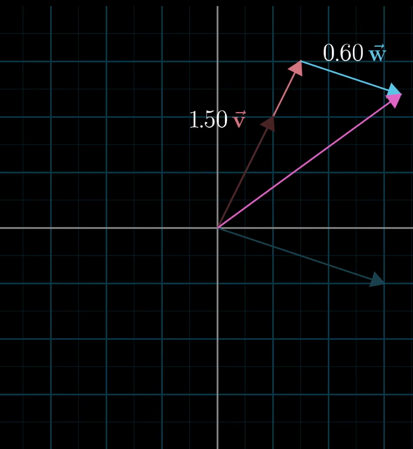
通过改变所选择的标量，你可以得到哪些二维向量？
答案是，你可以得到所有的二维向量。为什么呢？
这样一对新的基向量，同样允许我们在一对数和二维向量之间自由转化；
但是这种变换关系与之前用i帽 和 j帽的变换关系完全不同；
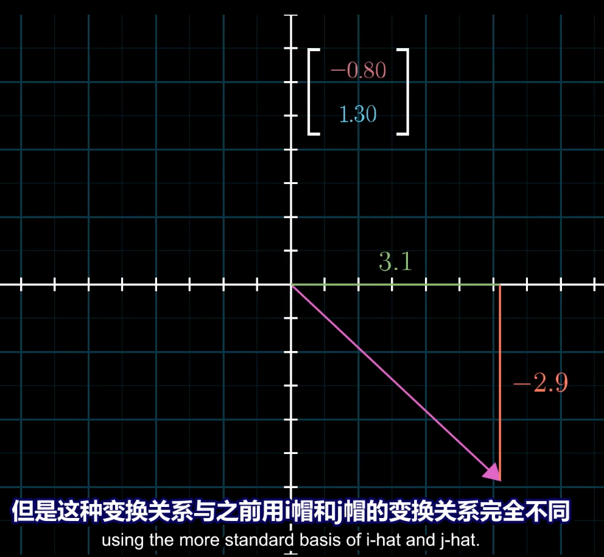
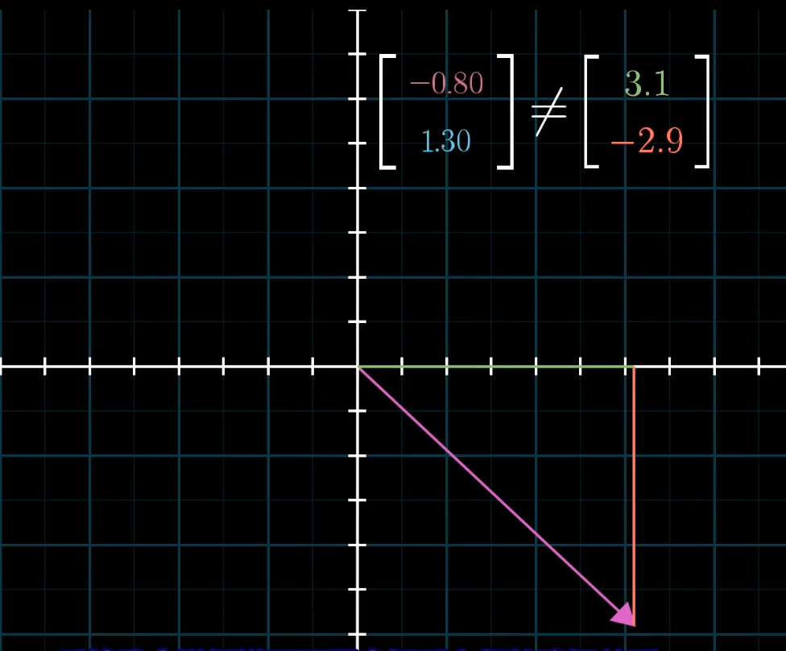
每当我们用数字描述向量时，它都依赖于我们正在使用的基两个数乘向量和被称为这两个向量的线性组合。
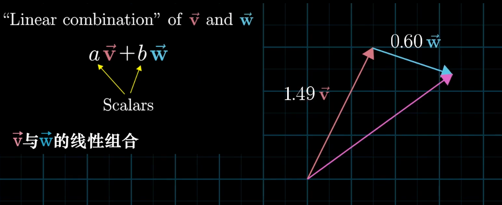
2.2 向量张成的空间（span）
“线性”这个词从哪儿来？这根直线又又什么关系？
如果固定其中一个标量，让另一个标量自由变化。所产生的向量的终点会描出一条直线；(下面两张图分别为固定向量W缩放V 和 固定V缩放W)
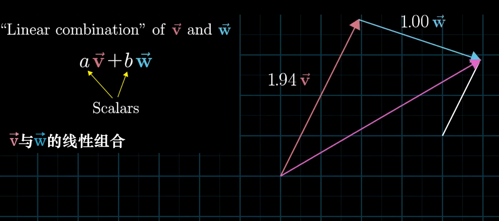
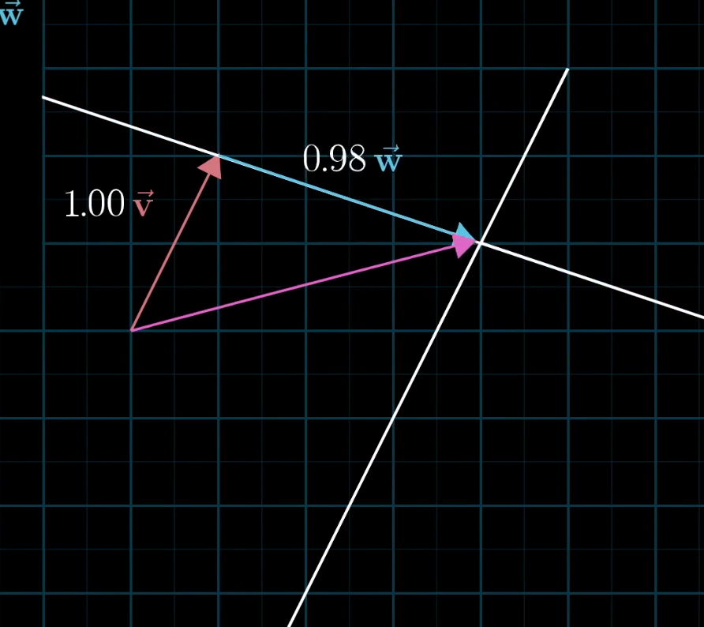
如果你让两个标量同时自由变化，考虑所有可能得到的向量；可能有两种情况；
大部分情况下，对于一对初始向量，你能到达平面中的每一个点；所有二维向量都尽在掌握；
但是也有糟糕的情况，当两个初始向量恰好共线时，所产生的向量的终点被限制在一条过原点的直线上；
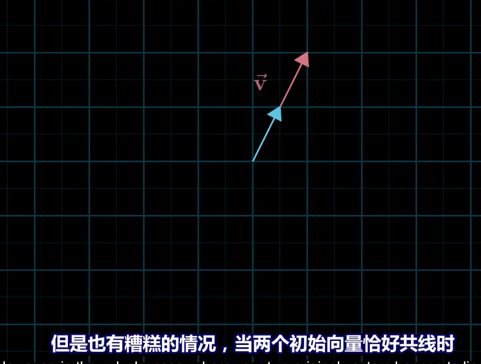
实际上还有第三种情况： 两个向量都是零向量。那就只能乖乖呆在原点了；

所有可以表示为给定向量线性组合的向量的集合；被称为给定向量张成的空间（span）; 现在用行话重新叙述刚才的内容；对大部分二维向量对来说，它们张成的空间是所有二维向量的集合。
但当共线的时，它们张成的空间就是终点落在一条直线上的向量的集合；
线性代数紧紧围绕向量加法与数乘
两个向量张成的空间实际上是问仅通过向量加法与向量数乘这两种基础运算，你能获得的所有可能向量的集合是什么？
现在是时候讨论一下通常我们是如何将向量看作点的；
想象落在一条直接上的一些向量时，你会觉得拥挤。而同时想象所有二维向量填满平面时，你会觉得非常拥挤；
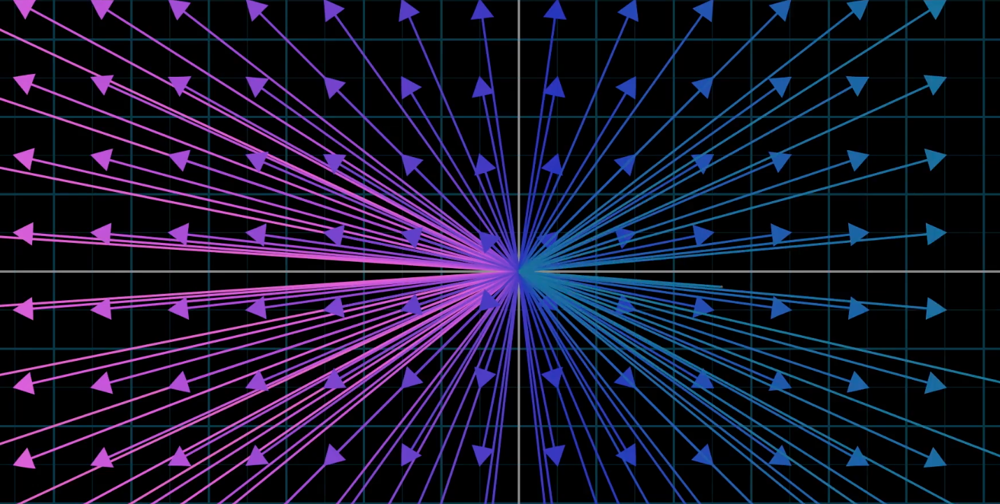
所以为了对抗这种情况，通常我们就用向量的终点代表改向量。而像以往一样，它的起点仍旧位于原点；用这种方法来看，如果你要考虑落在一条直线上的所有向量时，你需要考虑直线本身就行了；类似地，同时考虑所有二维向量时，将每个向量抽象为它的终点；实际上，你就不必考虑所有的箭头了，只需要考虑无限大的二维平面本身即可；
当你只考虑一个向量时，就把它看作箭头。当你考虑多个向量时，就把它们都看作点；前面有提到对大部分二维向量来说，它们张成的空间是整个无限大的二维平面；如果共线，它们张成的空间就是一条直线；
2.2.1 两个三维向量张成的空间是什么样的？
如果我们再去考虑三维空间，张成空间这个概念就开始变得有趣了。这两个向量张成的空间就是它们所有可能的线性组合。
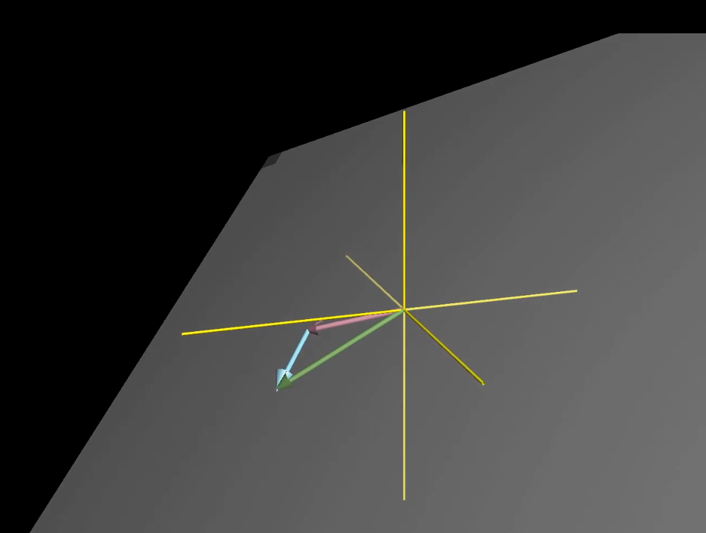
这个终点会画出三维空间中某个过原点的平面；这个平面就是这两个向量张成的空间；或者说，所有终点落在这个平面上的向量的集合是这两个向量张成的空间；
如果再加上第三个向量，那么它们张成的空间又是什么样的呢？
会有两种情况，如果第三个向量恰好落在前两个向量所张成的平面上。那么它们张成的空间并不会改变，还是被困在这个平面上；
另外一种情况，如果你随机选一个向量，它几乎不可能落在前面两个向量所张成的平面中。这种情况下，由于第三个向量指向不同的方向。当你缩放第三个向量时，它将前两个向量张成的平面沿它的方向来回移动，从而扫过整个空间；
2.3 线性无关与线性相关
当有多个向量，并且可以移除其中一个而不减少张成的空间。当这种情况发生时，我们称它们是“线性相关”的；另一种表述方法是其中一个向量，可以表示为其它向量的线性组合，因为这个向量已经落在其它向量张成的空间之中；
另一方面，如果所有向量都给张成的空间增添了新的维度；它们就被称为是“线性无关”的。
2.4 小结
“向量空间的一组基是张成该空间的一个线性无关的向量集；”
空间的一组基的严格定义是这样的： 张成该空间的一个线性无关向量的集合，基于目前对“张成” 和 “线性无关” 这两个词的理解。思考一下为什么这个定义合乎情理；
3. 矩阵与线性变换
3.1 线性变换
很遗憾， Matrix（矩阵）是什么是说不清的，你必须得自己亲眼看看；
“如果要我选出一个主题，它不仅让线性代数的其它内容一目了然，又经常被初次学习线性代数的人忽视，我会选择这个——线性变换的概念以及它和矩阵的关系”
在这期视频中，只会集中讨论这些变换在二维空间中长什么样。以及它们如何与矩阵向量乘法关联。尤其展示一种不用死记硬背的考虑矩阵向量乘法的方法；
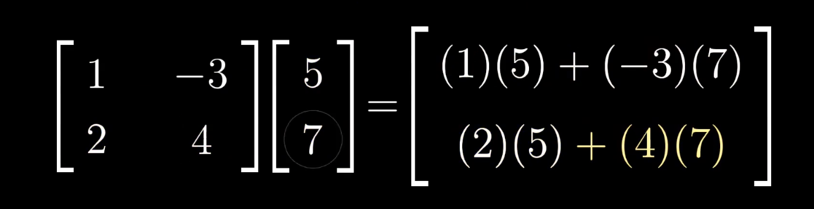
首先，先来解析“线性变换”这个术语。“变换”本质上是“函数”的一种花哨的说法，它接收输入内容，并输出对应结果；
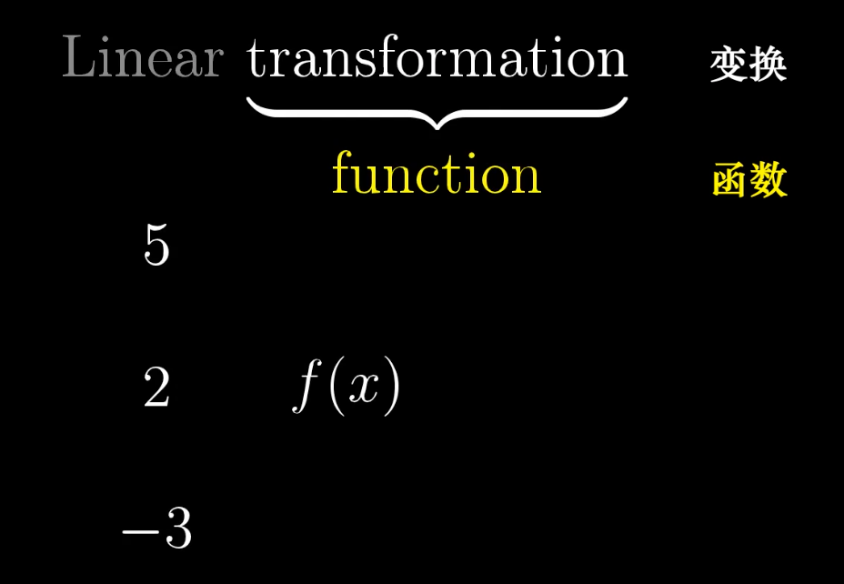
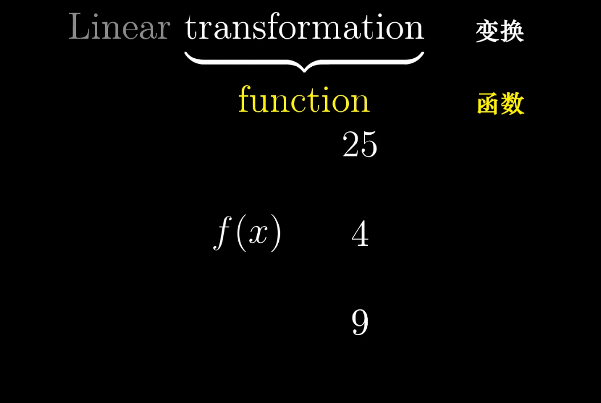
特别地，在线性代数的情况下。我么考虑的是接收一个向量并且输出一个向量的变换；
特别的，在线性代数的情况下。我们考虑的是接收一个向量并且输出一个向量的变换；
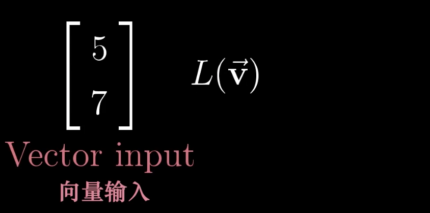
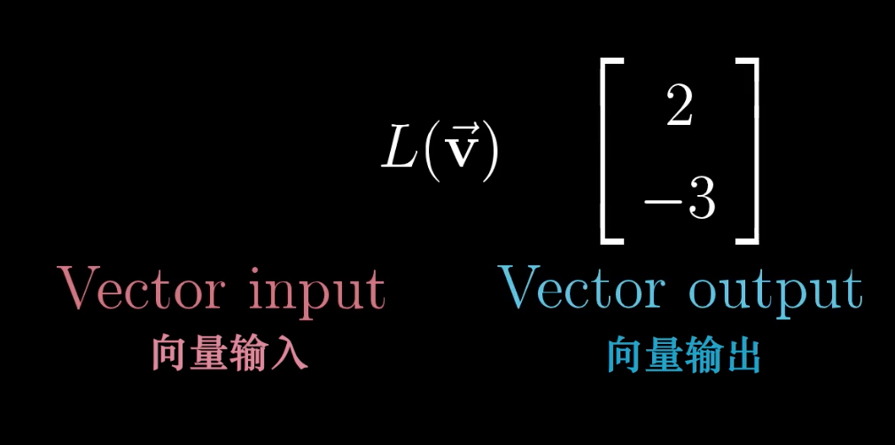
既然“变换”和“函数”意义相同，为什么还要使用前者而不是后者？因为使用“变换”是在暗示以特定方式来可视化这一输入-输出关系； 一种理解“向量的函数”的方法是使用运动。
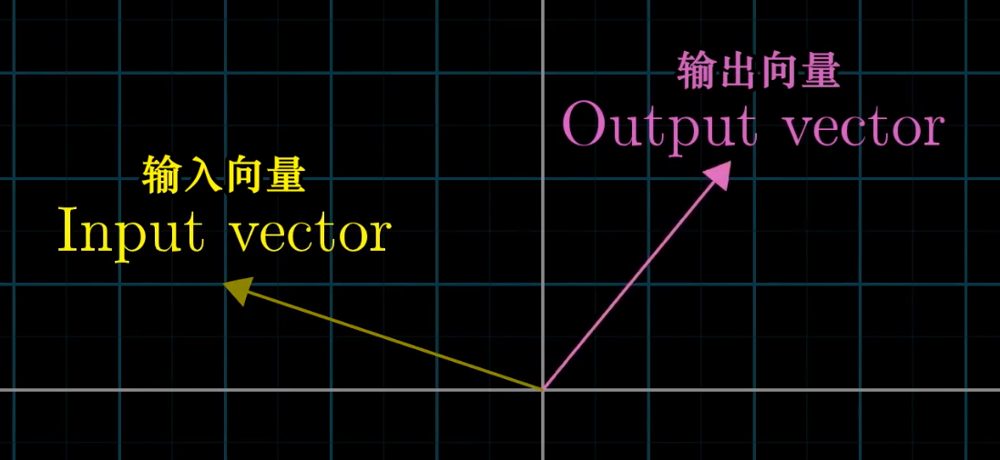
如果一个变换接收一个向量并输出一个向量；我们想象这个输入向量移动到输出向量的位置；
接下来，要理解整个变换。我们可以想象每一个输入向量都移动到对应输出向量的位置；同样多个箭头显得很拥挤，只用终点表示该向量，用这种方法考虑所有输入向量都移动到对应输出向量的位置时。我们只用看空间中的所有点移动到其它点的位置；
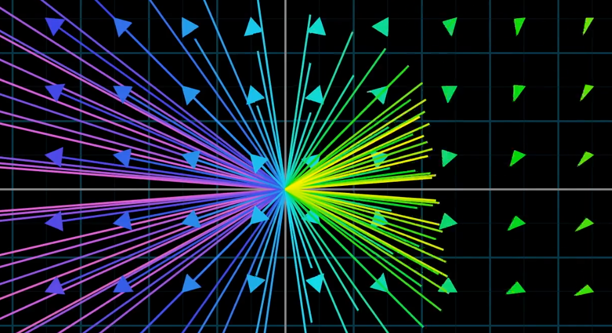
各种个样对空间的变换所产生的效果是美妙的，任意一个变换可以非常复杂。幸运的是，线性代数限制在一种特殊类型的变换上；这种变换更容易理解，称为线性变换
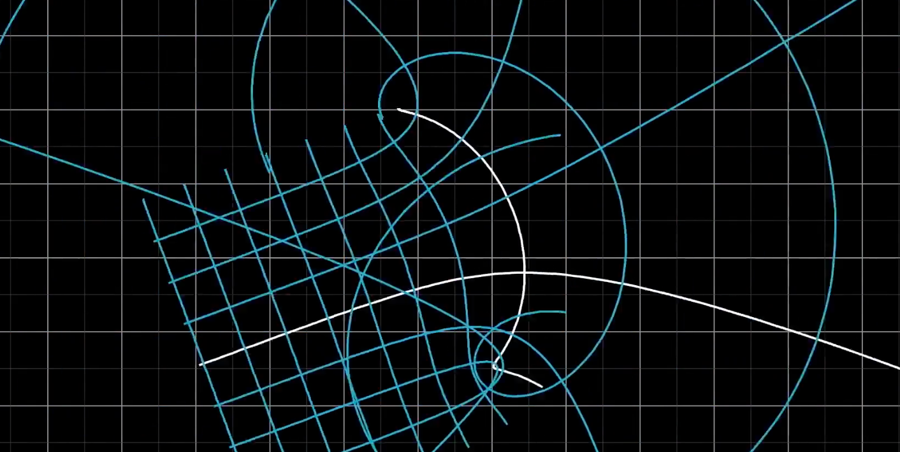
直观地说，如果一个变换具有以下两条性质，我们就称它是线性的；
一是直线在变换后仍然保持为直线，不能有所弯曲；
二是原点必须保持固定；
举例： 上图变换保持原点不动，乍一看它好像保持直线平直；但实际并非如此，因为只展示了水平和竖直的网格线；
当你看看它对一条对角线的作用时，很明显它不是一个线性变换；
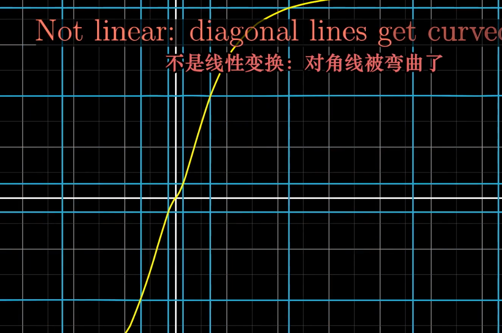
总体来说，你应该把线性变换看作是“保持网格线平行且等距分布”的变换；
3.1.1 如何用数值描述线性变换
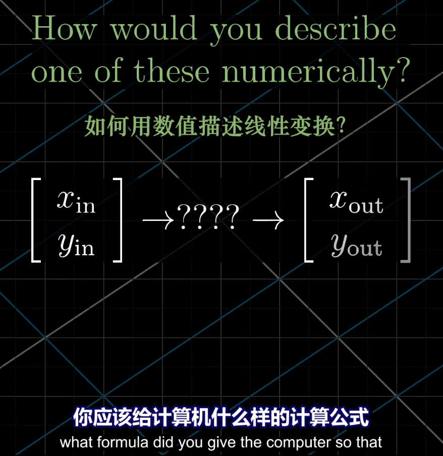
当你在通过编程制作动画和视频来教授这一主题，你应该给计算机什么样的计算公式；使得你给它一个向量的坐标，它能给你变换后向量的坐标呢？
实际结果是，你只需要记录两个基向量i帽和j帽变换后的位置；
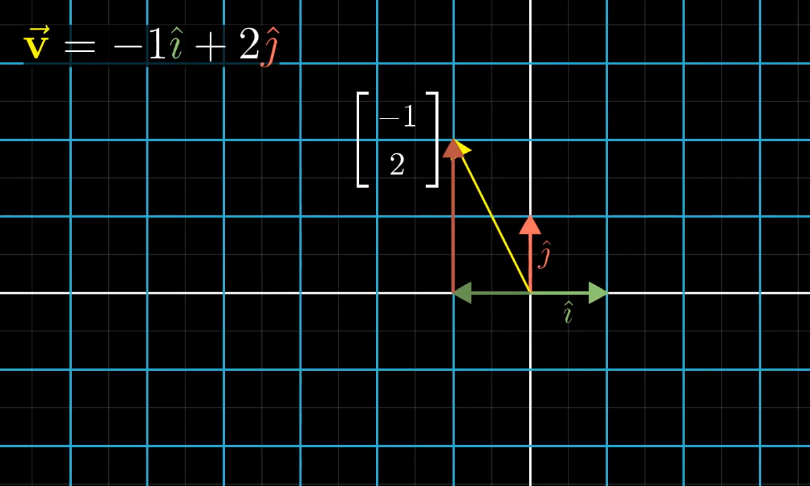
比如说，考虑坐标为（-1，2）的向量V。 这个向量就是 -1 与 i帽之积与2与j帽之积的和；
如果运用一些变换，并且跟随这三个向量的运动。网格线保持平行且等距分布的性质有一个重要的推论；
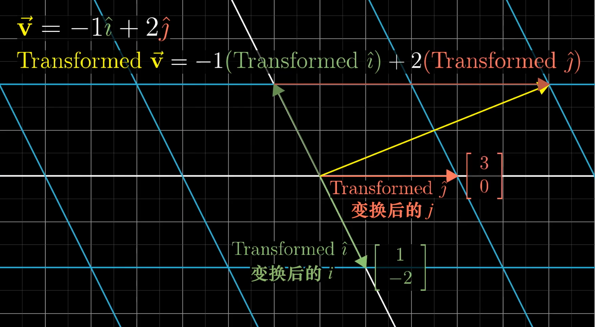
变换后的向量V的位置，是-1与变换后的i帽之积，加上2与变换后的j帽之积；
换句话说，向量V是i帽和j帽的一个特定线性组合，那么变换后的向量V也是变换后i帽和j帽的同样的线性组合；这意味着，你可以只根据变换后的i帽和j帽，就推断出变换后的V；
如上图所示的变换，可以看出i帽落在坐标（1，-2）上。j帽落在x轴上，坐标为（3，0）；也就是说，-1乘以i帽加上2乘以j帽所代表的向量；会落在-1 乘以向量（1，-2）加上2乘以向量（3，0）的位置上；简单运算之后，你就能推断出向量V一定落在向量（5，2）上；
1 | Transformed V = -1(Transformed i) + 2(Transformed j) |
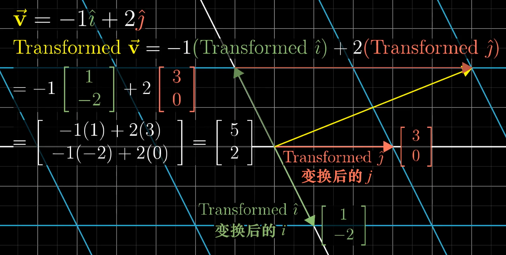
实际上，因为展示出整个变换的样子。完全可以直接读出向量V在变换后落在坐标（5，2）上；但是更炫酷的是，只要记录了变换后的i帽和j帽。我们就可以推断出任意向量在变换之后的位置；完全必须观察变换本身是什么样。
一般情况下，一个向量的坐标是（x，y），变换后这个向量就是x乘以变换后的i帽（1，-2）；加上y乘以变换后的j帽（3，0）。简单运算之后你就知道它落在坐标（1x+3y, -2x+0y）上。运用这个公式，我给你任意一个向量，你都能告诉它在变换后的位置；
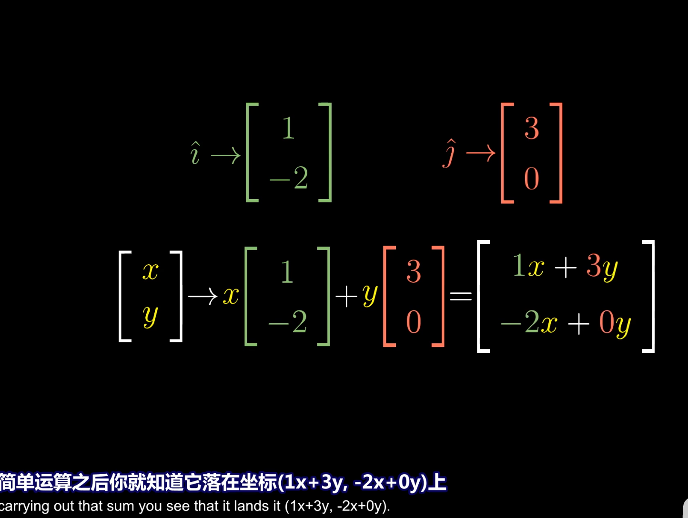
以上这些内容是在说，一个二维线性变换仅由四个数字完全确定。变换后i帽的两个坐标与变换后j帽的两个坐标。通常我们将这些坐标包装在一个2*2的格子中，称它为2*2矩阵；
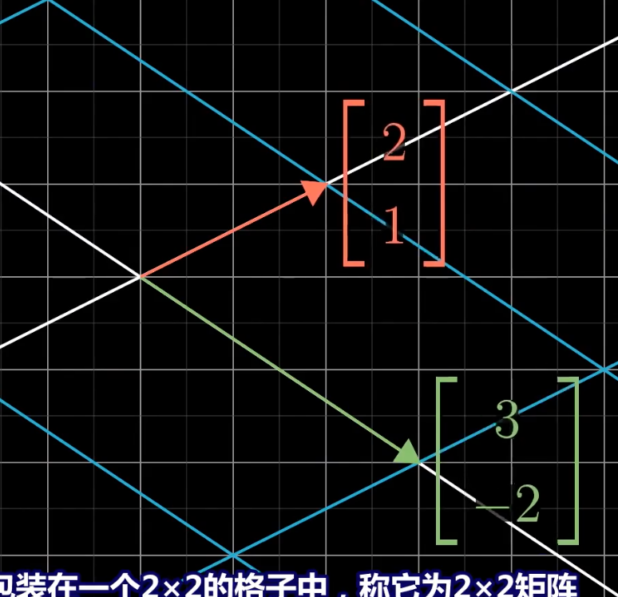
你可以把它的列理解为两个特殊的向量，即变换后的i帽和j帽。如果你有一个描述线性变换的2*2矩阵，以及一个给定向量；你想了解线性变换对这个向量的作用；你只需要取出向量的坐标；将它们分别与矩阵的特定列相乘，然后将结果相加即可；这与“缩放基向量再相加”的思想一致
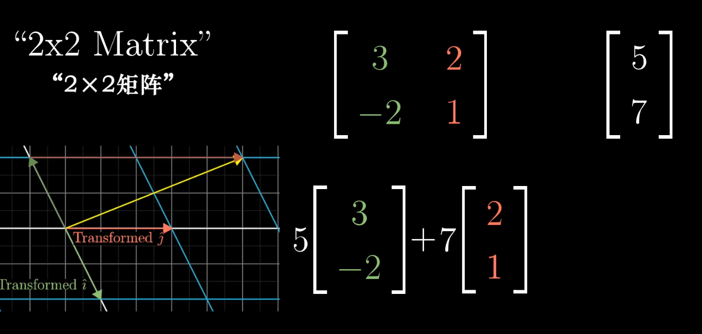
4. 矩阵乘法与线性变换复合
5. 三维空间中的线性变换
6. 行列式
7. 逆矩阵、列空间与零空间
8. 非方阵
9. 点积与对偶性
10. 叉积的标准介绍
11. 以线性变换的眼光看叉积
12. 基变换
13. 特征向量与特征值
14. 抽象向量空间
15. 克莱姆法则，几何解释